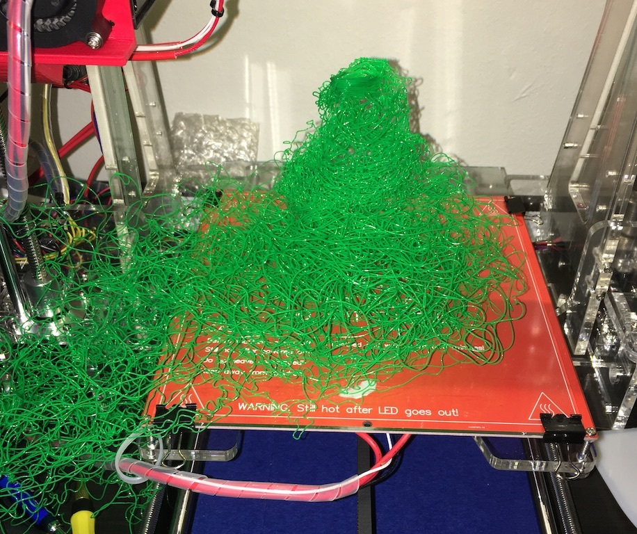

Min Prosjektoversikt-nettside for DigiFab 2023/2024
Herfra kan du navigere til de diverse Obligatoriske oppgavene mine. Mer informasjon om meg finnes nedenfor.
Mitt Arbeid

Prosjekt 13D-Printing
Ingen ting her enda
Informasjon om meg
Mitt navn er Gustav Dalen Due. Jeg kaller meg "MrBirdie" på Git og generelt på nett. Jeg er 31 år, og er student på Digitale Medier med fordypning i 3D.
Hvem er jeg?
Jeg er en stereotypisk nerd som har vært inn og ut av høyere utdanning i mange år.
Etter å ha gått meg halveis ferdig på "Design og Utvikling av IT-Systemer" hoppet jeg over på Digitale Medier her på HIOF.
Jeg har blandt annet fullført fagskole utdanning på Noroff hvor jeg studerte 3d i forbindelse med spill.
Her på HIOF plukket jeg opp 3d igjen, og ønsker å spesialisere utdanningen min innen dette. På våren 2023 gjorde jeg ferdig min bacheloroppgave, dog jeg mangler fremdeles noen studiepoeng for å bli ferdig med en bachelorgrad her på HIOF.
På fritiden driver jeg med styrketrening, brettspill og gaming. Er også kronisk avhengig av Youtube, og snakker ganske avansert Japansk etter mange år som anime-nerd.
Hvorfor Digifab?
Som emneansvarlige vet begynte jeg originalt på Digifab i 2022, men greide ikke å levere det aller siste eksamensprosjektet i 2023.
Dette skyldes jo min egen insatts i faget, men jeg ble rett og slett for overveldet av arbeidet og stresset rundt bacheloroppgaven min som ble fullført på våren i år 2023.
Dog jeg falt ut av emnet vil jeg ikke påstå at det skyldes en mangel på interesse i faget, selv om jeg må innrømme at jeg undervurderte insattsen som var nødvendig for å bestå.
Min originale grunn for å ta opp Digifab kom etter å ha tatt faget "Skisser og Protptyper". Da slo det meg at 3d-printing er en helt egen rettning man kan bruke 3d kompetanse til, så jeg føler det hadde vært en bortkastet mulighet å ikke studere dette når jeg har sjansen.
Jeg er selv også veldig interessert i tradisjonelle brettspill som DnD og Warhammer, -hvor det har utviklet seg en stor industri som bruker 3d-printing til å produsere miniatyr-figurer.
3d-printing er også en kompetanse jeg bare tror kommer til å bli mer og mer relevant i flere industrisektorer, samt at det kommer til å vokse som hobby ettersom det blir billigere å gjøre dette hjemme.
Jeg har også erfart å kode diverse "mikro-datamaskiner" både i programmeringsfagene jeg har tatt, men også i "Skisser og Prototyper", så jeg ser fram til å forhåpentligvis kunne sette dette sammen med 3d-printing i de senere prosjektene i dette emnet.